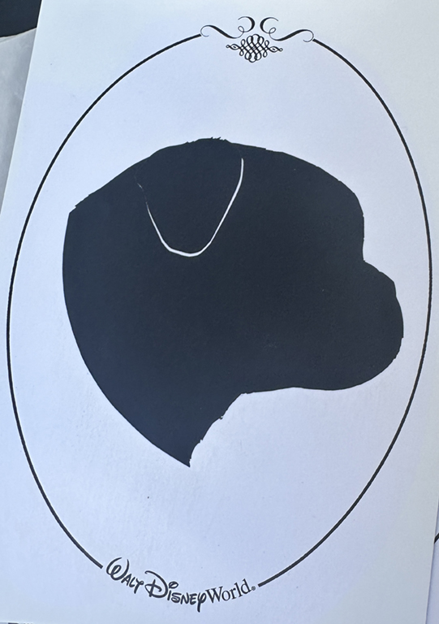
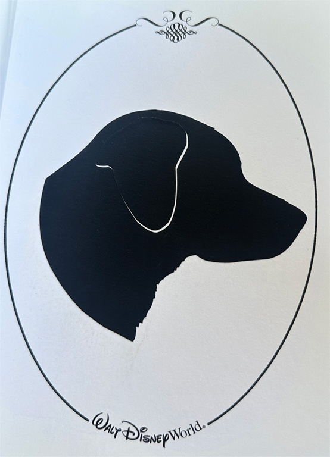
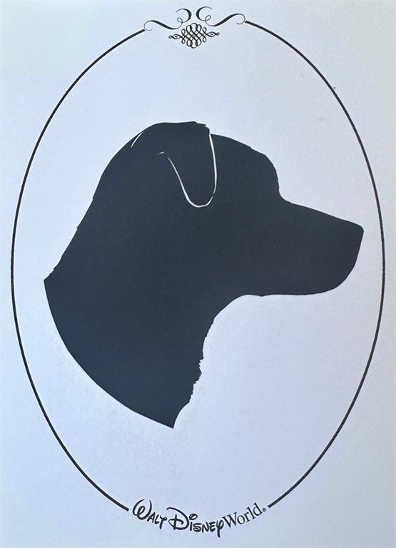

"Until one has loved an animal, a part of one's soul remains unawakened."-Anatole France
Welcome to the world of my sweet boys. When creating projects for school, I've always looked to my dogs as inspiration, and this project is no different. On this website, you'll be able to read the journey across the galaxy of my three dogs Vader, Solo, and Obi.
Vader is our 14 year old pug. He was the first dog we got and came with one eye. We adopted him when he was 8 years old and he has been an amazing addition to our family. To describe his personality, he is a grumpy old man. He does what he wants and you can't stop him once he puts his mind to something. For example, today he saw that his brother didn't eat his breakfast, so he went after it. We moved him away from the food multiple times; however, he kept going back. He also loves food, as you can see in the example above. It doesn't matter what it is, dog food, pizza, veggies, chicken and...lemon (yes, he willingly ate a piece of lemon, but that's a story for another day). He is also very protective and loyal. He loves mom and will tolerate his sister (me); however, dad and brother tend to be on thin ice with him.
Solo is our 5 year old lab mutt. He is half yellow lab and half pointer. We adopted him during the pandemic when he was 4 months old. His entire litter was surrendered to our local animal shelter after being found by the breeders landlord. From what the shelter told us, the breeders were only allowed two dogs and the puppies were shoved in a closet and fed horse feed. When we got him he had lots of stomach issues, problems with trust, and growth issues. His bones in his legs didn't grow right and had his first surgrey at 1 year old and we are currently trying to get him another one for his bad knees. He is almost always anxious and untrusting of new people and dogs. He won't hurt anyone, he'll just bark and hide. However, we still love him and he loves us. All he does is sleep, cuddle, eat, and occasionally play with his brothers. If ones things for sure, he is a bottomless pit for food. Just like Vader, he loves everything and anything (but won't eat a lemon like Vader did once).
Obi is our 3 year old mutt. We call him a Shepitdoodle (Aussie, Pitbull, and Poodle). He was adopted from the shelter after he was found on the streets. We don't know much else about his life before us. However, we do know he is a ball of energy. He is very active and loves to play with his brothers. He is incredibly smart and will get himself into anything if left alone for to long. Besides being intelligent, he is very stuborn. He'll come when you call, but if you ask him to eat his breakfast he will walk away from it as soon as you move. He is also the most gentle dog we've owned (when it comes to food at least, he'll use you like a backboard). He is also a great cuddler. Unlike the other two you can ask him to snooze somewhere and he'll move there (which is so helpful at night).
Venture throughout these boy's stories from their perspectives.